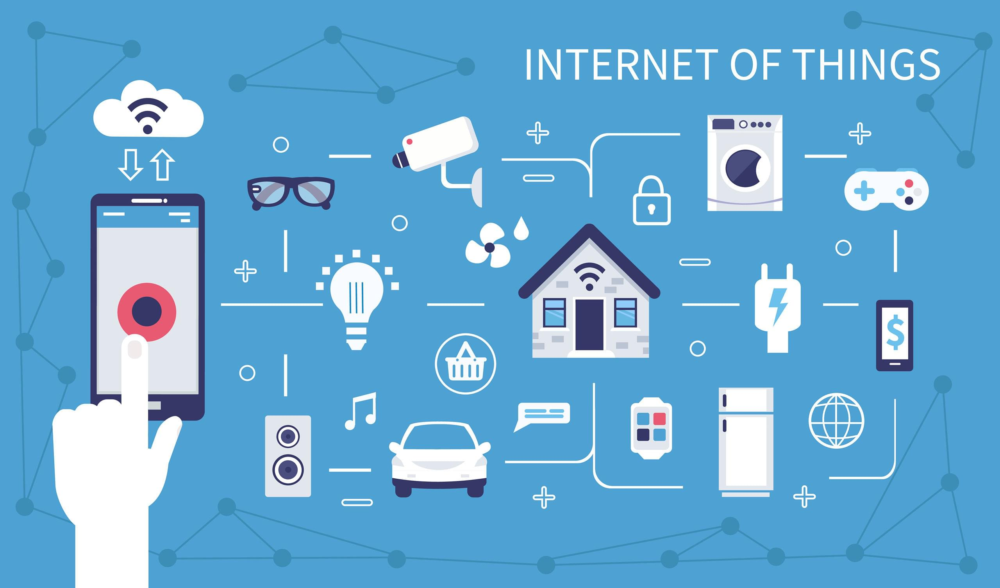
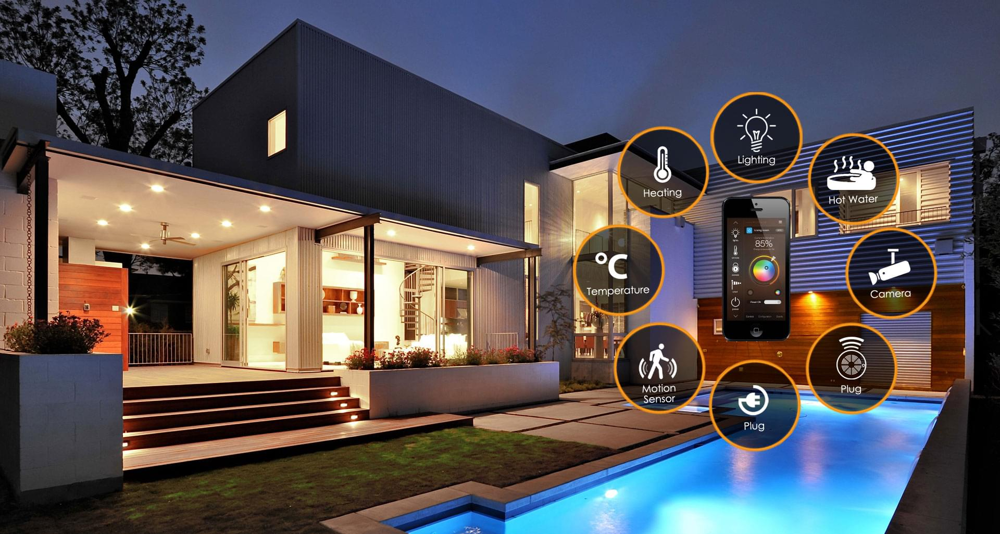
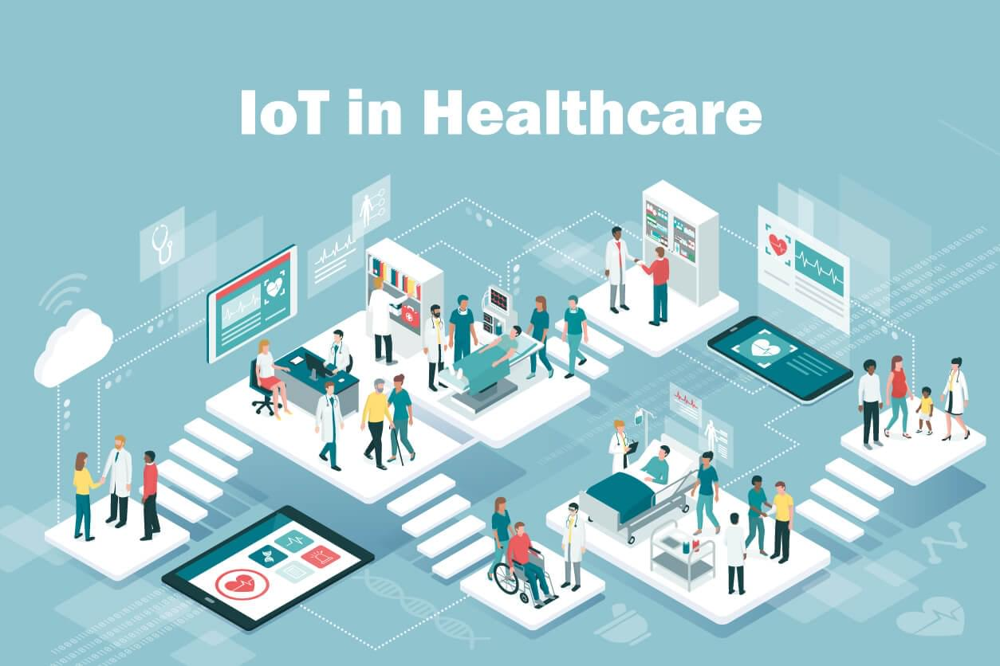
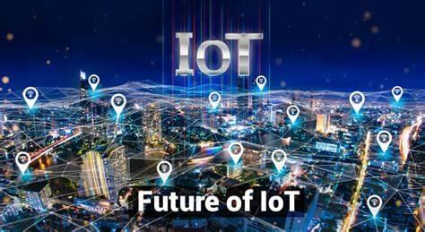

Internet de las Cosas (IoT)
1. Concepto y Arquitectura del IoT
El Internet de las Cosas (IoT) se refiere a la red de dispositivos físicos conectados a Internet que recopilan, comparten y procesan datos. Esta tecnología está transformando industrias al permitir la automatización y la toma de decisiones basada en datos.
Arquitectura básica:
- Capas de Dispositivos: Sensores, actuadores y hardware físico que interactúan con el entorno.
- Capas de Conectividad: Redes como Wi-Fi, Bluetooth, Zigbee y LPWAN.
- Capas de Procesamiento: Plataformas en la nube para análisis y almacenamiento de datos.
- Capas de Aplicación: Datos procesados utilizados para control remoto, automatización o análisis predictivo.
2. Aplicaciones del IoT
El IoT tiene aplicaciones en diversos sectores, mejorando la eficiencia y la experiencia del usuario.
2.1 Hogar Inteligente
Dispositivos como termostatos, cámaras y asistentes virtuales transforman los hogares, ofreciendo comodidad y eficiencia energética.
2.2 Industria 4.0
IoT optimiza procesos industriales, facilita el mantenimiento predictivo y mejora la gestión de inventarios.
2.3 Salud
Dispositivos portátiles monitorean constantes vitales, enviando alertas en tiempo real a los médicos.
2.4 Ciudades Inteligentes
Control del tráfico, gestión de recursos como agua y electricidad, y monitoreo ambiental son posibles gracias al IoT.
3. Retos del IoT
Aunque el IoT presenta un enorme potencial, enfrenta desafíos importantes:
- Seguridad: Aumentan las vulnerabilidades, como ataques DDoS y riesgos de acceso no autorizado.
- Interoperabilidad: La falta de estándares dificulta la integración entre dispositivos.
- Privacidad: La recopilación masiva de datos personales plantea desafíos éticos y regulatorios.
- Escalabilidad: Requiere infraestructuras robustas para manejar grandes volúmenes de datos.
4. Futuro del IoT
El IoT se expande hacia el Internet de Todo (IoE), conectando no solo dispositivos, sino también personas y procesos. Tecnologías emergentes como 5G, Edge Computing e Inteligencia Artificial potencian sus capacidades.
Estas innovaciones prometen aplicaciones más rápidas, inteligentes y adaptativas, redefiniendo sectores como la salud, la logística y las ciudades inteligentes.
